Not just words.
When I am not designing or coding, I read. I read a lot and write them on medium and some of them make it here on my website blog. I usually write about Code, Design and my Life.
My Blogs
-
15 December 2021
How I build my Habits?
You might have heard about habit tracking, but habit building is different. Her... -
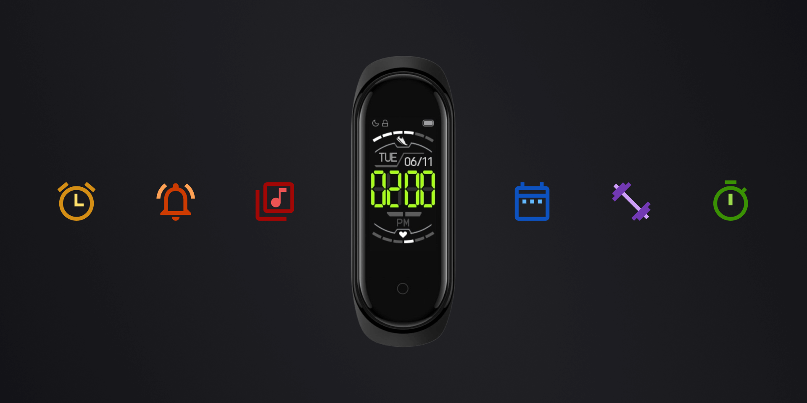
25 September 2021
How Mi Band increased my Productivity?
I have been using the Mi Band 4 for almost two years. This wearable has helped ... -
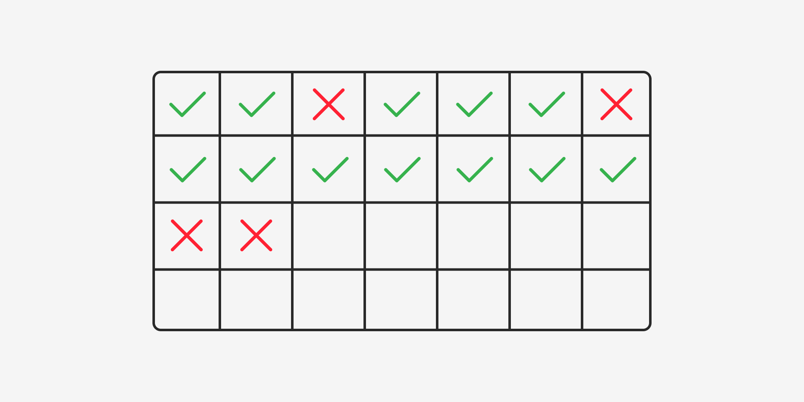
05 July 2021
My Task Management System
The most important part of a productivity system is a to-do manager, and in thi... -
28 April 2021
How to Read More Books?
Reading books is the best thing I have done in my life, and I feel proud. It ha... -
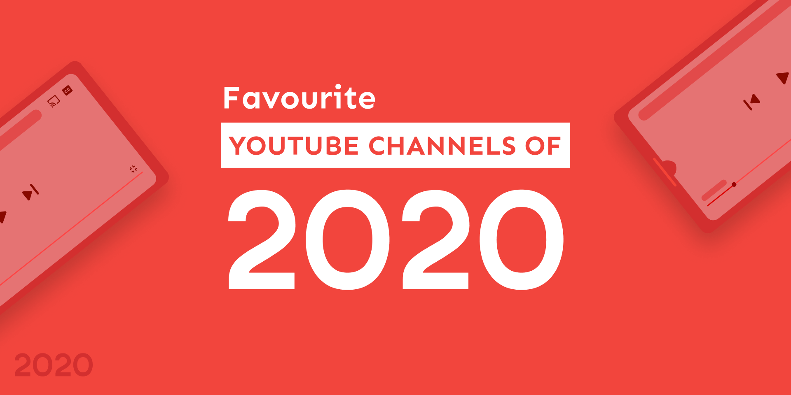
03 January 2021
Favourite YouTube Channels of 2020
These are my favourite YouTube channels, which I discovered in the year 2020. T... -
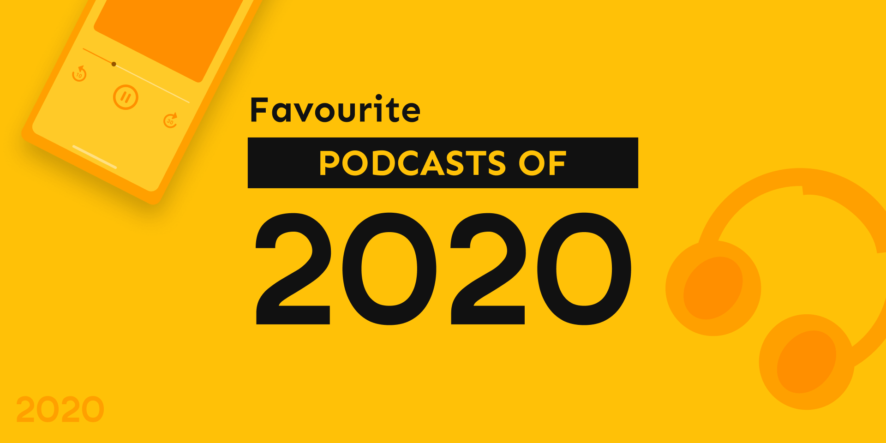
31 December 2020
Favourite Podcasts of 2020
These are my favourite podcasts, which I discovered in 2020 and loved listening... -
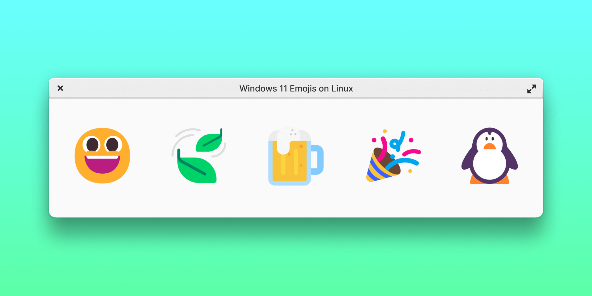
31
Enable Windows 11 Emojis on Linux
Microsoft recently announced a huge upgrade to the existing emoji with Windows ... -
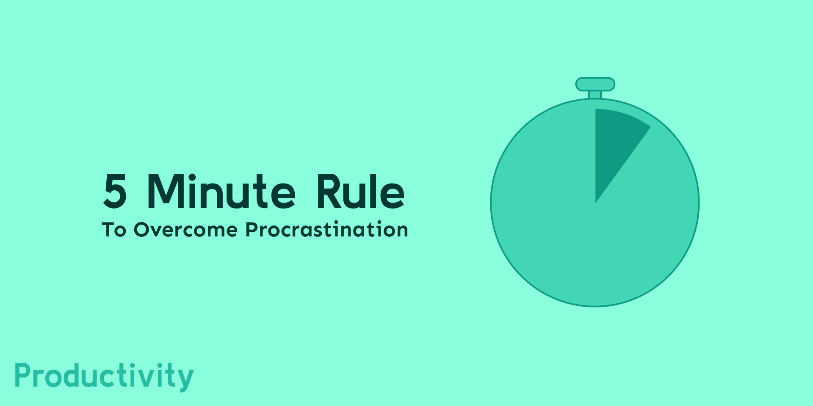
12 September 2020
5 Minute Rule to Overcome Procrastination
Introduction Have you ever experienced this where you have to do a task, but do... -
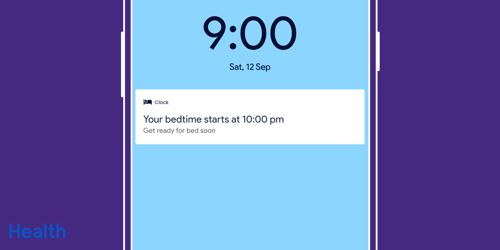
01 October 2020
Bedtime Mode
Introduction This article is something that everyone should read. I know everyo... -
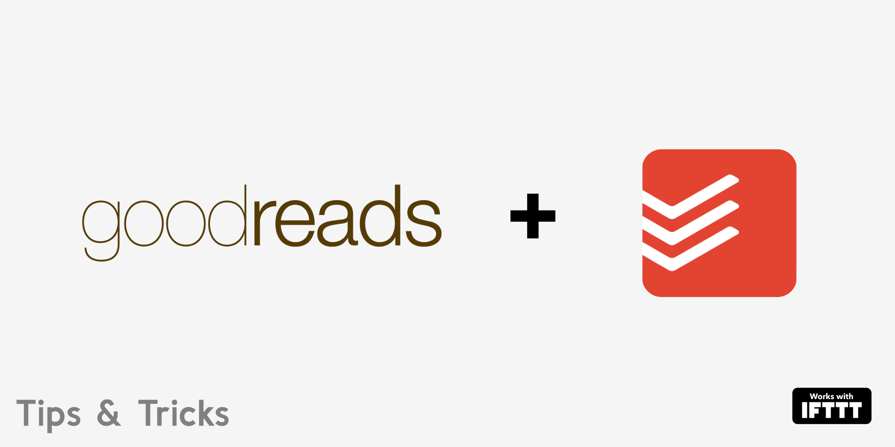
19 August 2020
Integrate Goodreads with Todoist
Recently I read an article by Todoist about different productivity methods, and... -
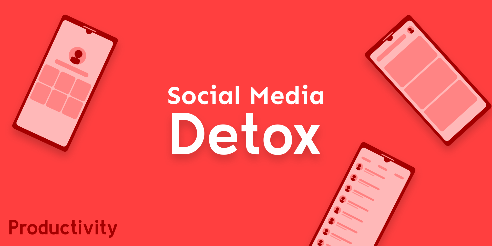
16 July 2020
Social media Detox
Being away from all social media is not an easy task. You will always be tempte... -
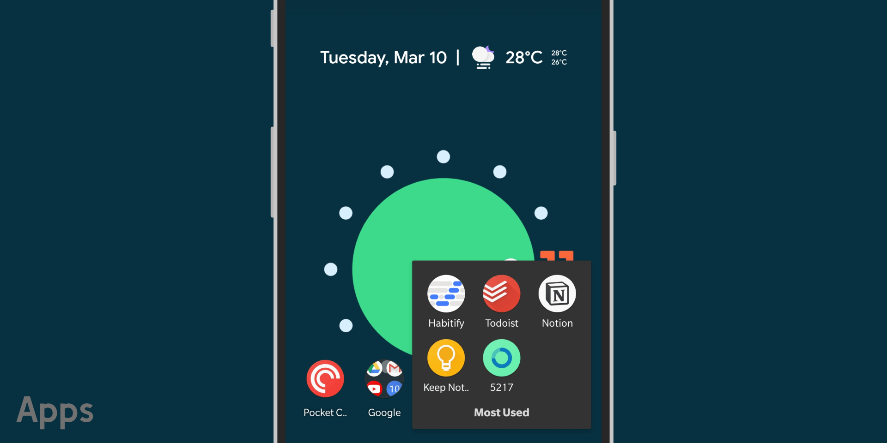
11 March 2020
Top 5 Productivity Apps
Todoist It’s the best todo application that I have ever used. I have tried many... -
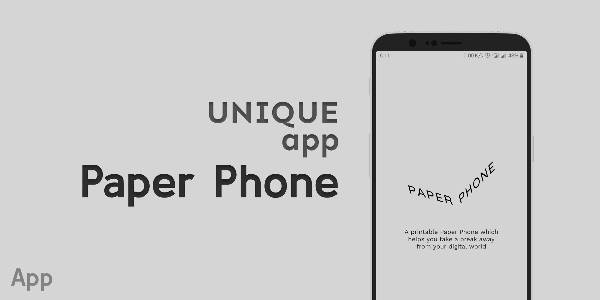
09 March 2020
Paper Phone
By Special Projects Yes, you read it correct “Paper Phone”. A printable pa...